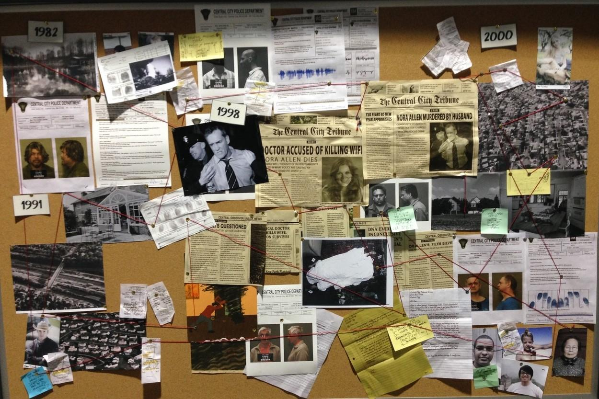
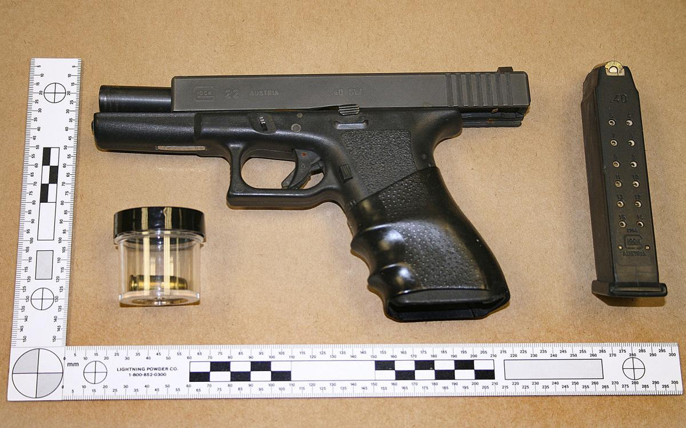

Your journey into the shadows begins now, Detective.
The CC Organization is a Digital elite detectives. We solve the unsolvable, chase shadows, and uncover hidden truths. Every case you take brings you closer to mastering the art of investigation.
A quiet, broken room. Blood on the floor, a shattered vase near the body. No signs of forced entry — whoever did this, was let in. The silence still screams inside these walls. Every inch matters. Analyze the environment, spot the anomalies, and connect the dots before they fade.
Three faces on the wall. All knew the victim. All had a reason to end it. Some lied. Some hid their tears too well. One of them still carries the weight of murder. Piece together motives, timelines, and secrets. Every suspect has a story; only one has the truth.


A 9mm handgun was found missing from the victim’s house. No bullets fired. A knife wound was confirmed as the cause of death. Close, personal. Whoever killed — wanted it to hurt. Objects hold memories. Fingerprints, blood traces, and fibers tell stories the dead can no longer share.